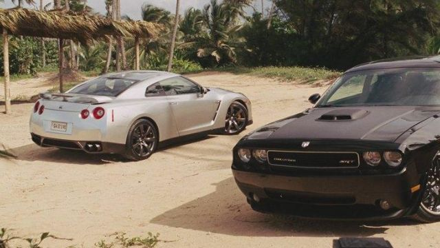
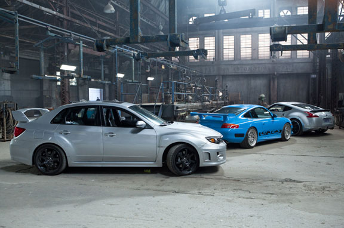
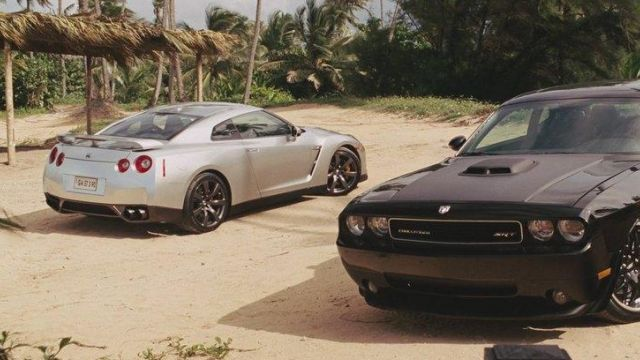
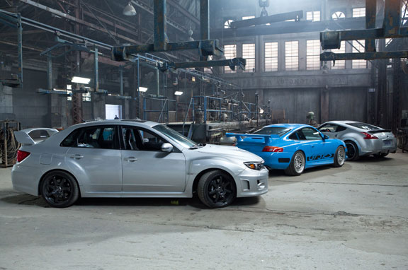

Fast and Furious 5
2011
Fast & Furious 5
Fast & Furious 5, es la quinta entrega de la franquicia Fast & Furious. Fue la película que transformó la serie de películas de carreras callejeras en un espectáculo de acción y robos a gran escala.
La película comienza justo después del final de Fast & Furious 4, cuando Brian y Mia rescatan a Dom de un transporte penitenciario. Huyendo de la ley, se refugian en Brasil, donde aceptan un trabajo de robo de autos que los mete en problemas con el narcotraficante Hernán Reyes. Para acabar con Reyes y obtener su dinero, Dom y Brian reúnen un equipo con antiguos personajes de la saga: Han, Roman, Tej y Gisele. Al mismo tiempo, el agente federal Luke Hobbs (Dwayne Johnson) llega a Brasil para capturar a Dom y Brian, pero eventualmente se une a ellos tras descubrir que Reyes es el verdadero enemigo. El clímax de la película es el famoso robo de la bóveda de un banco en Río de Janeiro, donde Dom y Brian arrastran una caja fuerte por toda la ciudad en una de las escenas de acción más icónicas de la saga. Finalmente, el equipo se sale con la suya y se divide, cada uno llevándose su parte del botín.
 


